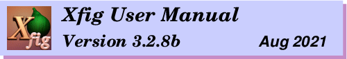
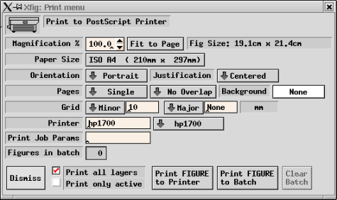
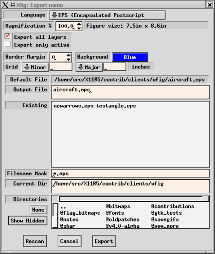
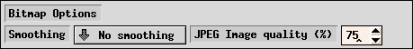

印刷、及びエクスポート
Fig ファイルの Export や Print のために、
xfig は Fig ファイルを望みの出力フォーマットに変換するための
ポスト・プロセッサである fig2dev を呼び出します。
Export に際しては、PostScript、EPS、LaTeX、METAFONT や、
GIF、JPEG などのビットマップ・フォーマットを含む、
いくつものフォーマットがサポートされています。
Export の章の Language の説明を参照して下さい。
これは、xfig とともに、fig2dev を
インストールしておかなければならないことを意味します。
fig2dev は transfig パッケージの一部であり、
あなたが xfig を見付けた場所から入手できる筈です。
詳細については、xfig の入手とインストール
を参照して下さい。
File メニュー の Print...
(あるいはアクセラレータ Meta-P) は、
図を PostScript プリンタへ出力するための機能を提供します。
出力をファイルに格納したい場合には
Export を使用します。
アクセラレータ Shift-Meta-P は
以前に設定されたパラメータを用いて印刷を行ないます
(つまり、Print パネルは開かれませんが、その図は印刷されます)。

- Magnification
- 図の出力に際しての拡大率を、% で指定します。
デフォルトは 100% ですが、
Fig.magnification リソースによって変更することもできます。
- Fit to Page
- このボタンをクリックすると、
Paper Size で設定された用紙に
少なくとも 1/2 インチの余裕を持って図が収まるように、
Magnification を自動的に設定します。
- Orientation
- 出力のオリエンテーション (方向) を指定します。
Landscape は用紙を横長に、
Portrait は用紙を縦長に使用するようにします。
デフォルトのオリエンテーションは図のオリエンテーション
(これは View メニュー の
Portrait/Landscape
によって変更できる) と同一となります。
- Justification
- 図の左端を用紙の端に合わせる (Flush Left) か、
図を用紙の中央に出力するようにする (Centered) かを選択します。
- Paper Size
- 用紙の大きさを選択します。
用紙の大きさとしては以下のものが使用可能です。
- Letter (8.5in x 11in)
- Legal (8.5in x 14in)
- Tabloid (17in x 11in)
- ANSI A (8.5in x 11in)
- ANSI B (11in x 17in)
- ANSI C (17in x 22in)
- ANSI D (22in x 34in)
- ANSI E (34in x 44in)
- ISO A9 (37mm x 52mm)
- ISO A8 (52mm x 74mm)
- ISO A7 (74mm x 105mm)
- ISO A6 (105mm x 148mm)
- ISO A5 (148mm x 210mm)
- ISO A4 (21cm x 29.7cm)
- ISO A3 (29.7cm x 42cm)
- ISO A2 (42cm x 59.4cm)
- ISO A1 (59.4cm x 84cm)
- ISO A0 (84cm x 118.8cm)
- JIS B10 (32mm x 45mm)
- JIS B9 (45mm x 64mm)
- JIS B8 (64mm x 91mm)
- JIS B7 (91mm x 128mm)
- JIS B6 (128mm x 182mm)
- JIS B5 (182mm x 257mm)
- JIS B4 (257mm x 364mm)
- JIS B3 (364mm x 515mm)
- JIS B2 (515mm x 728mm)
- JIS B1 (728mm x 1030mm)
- JIS B0 (1030mm x 1456mm)
- Pages
- Multiple を選択すると、
図が Paper Size で選択された用紙よりも大きい場合に、
図を複数のページに分割して印刷するようになります。
この機能は、印刷を行なった後でそれらの紙を貼り合わせる
(貼り合わせを容易にするために
xfig は図の一部がオーバーラップするように出力します)
ことによって、用紙よりも大きい図を出力することを可能とします。
Single を選択した場合にはこの機能は使用されず、
用紙からはみ出した部分は単に失われます。
- Background
- 出力する図の背景の色を設定します。
デフォルトは白です。
- Grid

- Minor (細)、及び／もしくは Major (太) の
グリッドの間隔をプルダウン・メニューから選択し、
あるいは直接入力することにより、
灰色のグリッドを印刷することができます。
グリッドの間隔の単位は、図の単位に依存して、
inch、あるいは mm となります。
デフォルトは None です。
- Printer
- 出力先のプリンタを指定します。
このフィールドが空の場合には、
出力は標準プリンタへ送られます。
このデフォルト値は、リソース Fig*printer*string、
もしくは環境変数 $PRINTER で指定されたものとなります。
システムがプリンタを定義するために
/etc/printcap を用いているならば、
この右側にメニューが置かれます。
- Print Job Params
- ここで指定された文字列は、
lpr (System V システムにおいては lp) の実行に際して
オプションとして渡されます。
文字列の中に %f が含まれている場合、
それ (2回以上書いても構わない) は図の名前に置き換えられます。
デフォルトではこれは空ですが、必要であればリソース
Fig*job-params*string を用いて設定することができます。
- Figures in batch
- ここには、
印刷のためのバッチ・ファイルに格納されている図の個数が表示されます。
図は Print FIGURE to Batch を用いて
バッチ・ファイルに入れることができ、
それらの図は Print BATCH to Printer によって
1つのジョブとしてプリンタへ出力することができます。
- Dismiss
- このボタンをクリックすると Print パネルが閉じられます。
アクセラレータ Meta-C も同じ意味を持ちます。
- Print all layers/Export only active
- 図全体 (全てのレイヤ) を印刷するか、
Depth パネルでアクティブにされている
レイヤのみを印刷するかを選ぶことができます。
- Print FIGURE / BATCH to Printer
- このボタンをクリックすると、
バッチ・ファイルに図が格納されている場合にはそれらの図が、
さもなくば現在の図が、プリンタへ出力されます。
アクセラレータ Meta-P も同じ意味を持ちます。
このボタンのラベルは、現在の図が印刷されるのか、
もしくはバッチ・ファイル内の図が印刷されるのかに応じて、
Print FIGURE to Printer、
もしくは Print BATCH to Printer のいずれかとなります。
プリンタへの出力に際して、xfig は、まず
fig2dev プログラム
を用いて図を PostScript に変換した上で、
その結果を lpr (System V システムにおいては lp) に
渡します。
lpr (もしくは lp) の実行に際しては、
PostScript Printer フィールドで指定されたプリンタ名と
Print Job Params フィールドで指定されたオプションが
コマンド行オプションとして渡されます。
- Print FIGURE to Batch
- このボタンをクリックすると、
現在の図がバッチ・ファイルに追加されます。
アクセラレータ Meta-B も同じ意味を持ちます。
バッチ・ファイルに格納された図は、
後で Print BATCH to Printer が実行されたときにプリンタに出力されます。
この機能は、
複数の図を一度にプリンタへ出力するために用いることができます。
- Clear Batch
- このボタンをクリックすると、
バッチ・ファイルの内容が消去されます。
アクセラレータ Meta-X も同じ意味を持ちます。
バッチ・ファイルの図は、
Print BATCH to Printer がクリックされた後には自動的に消去されます。
File メニュー の Export...
(あるいはアクセラレータ Meta-X) は、
図を PostScript、GIF、JPEG、HP-GL などの
種々のフォーマットでファイルに格納するための機能を提供します。
これは、xfig で作成した図を他のアプリケーション
(例えば LaTeX や FrameMaker など) で読み込みたい場合に用いることができます。
xfig を LaTeX とともに使用するためのヒントについては
LaTeX と Xfig を参照して下さい。
アクセラレータ Shift-Meta-X は
以前に設定されたパラメータを用いてエクスポートを行ないます
(つまり、Export パネルは開かれませんが、その図はエクスポートされます)。
図を PostScript プリンタへ出力するためには
Print を使用して下さい。

- Language
- 図をエクスポートするフォーマット (言語) を選択します。
デフォルトは Encapsulated PostScript ですが、
Fig.exportLanguage リソースによって変更することもできます。
以下のフォーマットが使用可能です。
ベクタ・フォーマット:
- PostScript
- Encapsulated PostScript (EPSF)
- EPS With ASCII (EPSI) preview
- EPS With monochrome TIFF preview
- EPS With color TIFF preview
- PDF (Portable Document Format)
- Combined PostScript/LaTeX
- Combined PDF/LaTeX
- LaTeX picture environment
- PicTeX macros
- IBMGL (HP-GL)
- Textyl
- TPIC
- PIC
- MF (MetaFont)
- MP (MetaPost)
- MMP (Multi-MetaPost)
- CGM
(Computer Graphics Metafile - useful to import into Microsoft WORD, etc.)
- Binary CGM
- EMF(Enhanced Metafile)
- Tk (Tck/Tk toolkit canvas)
- SVG (Scalable Vector Graphics - beta driver)
- HTML Image map
ビットマップ・フォーマット:
- GIF
(Graphic Interchange Format)
- JPEG
- PCX
(Paintbrush format)
- PNG
(Portable Network Graphics)
- PPM
(Portable Pixmap)
- SLD
(AutoDesk slide format)
- TIFF
(Tag Image File Format)
- XBM
(X11 Bitmap)
- XPM
(X11 Pixmap)
LaTeX フォーマットのバリエーションとして、
標準の picture 環境以外に、epic、eepic、
及び eepicemu マクロを使用することもできます。
Combined PostScript/LaTeX を用いると、図のテキストの部分を LaTeX で、
それ以外の部分を PostScript で出力することができますが、
これは特に図に複雑な数式が含まれている場合
(TEXT FLAGS も参照)
に有用です。
xfig で作成することのできるすべての図を、
すべてのフォーマットにおいて完全に出力できるわけではありません。
例えば、取り込まれたイメージは
IBMGL でのエクスポートに際しては出力されません。
PostScript でのエクスポートに際しては
xfig のほとんどすべての機能が使用可能であり、
またかなり高品質の出力を生成することができます。
xfig と共に入手可能な
TransFig パッケージの一部である fig2dev プログラムが、
Fig フォーマットからの実際の変換の処理を行ないます。
GIF や JPEG などのビットマップ形式でのエクスポートを行なうためには、
Ghostscript、
及び netpbm パッケージ
が必要となります。
- Magnification
- 図の出力に際しての拡大率を、% で指定します。
デフォルトは 100% ですが、
Fig.magnification リソースによって変更することもできます。
- Export all layers/Export only active
- 図全体 (全てのレイヤ) をエクスポートするか、
Depth パネル でアクティブとされている
レイヤのみをエクスポートするかを選ぶことができます。
- Border Margin
- PostScript、Encapsulated PostScript、HTML image map、
及びビットマップ・フォーマットのいずれか (例えば、GIF、JPEG など)
でのエクスポートに際して、
図の周囲にここで指定した幅の余白を設けることができます。
余白の大きさの単位は、ピクセル、もしくは 1/80インチです。
- Background
- 出力する図の背景の色を設定します。
デフォルトは白です。
- Grid
- Minor (細)、及び／もしくは Major (太) の
グリッドの間隔をプルダウン・メニューから選択し、
あるいは直接入力することにより、
灰色のグリッドを印刷することができます。
グリッドの間隔の単位は、図の単位に依存して、
inch、あるいは mm となります。
デフォルトは None です。
- PostScript Options
- これらのオプションは、Language として
PostScript が選択されている場合に現れます。
- Paper Size
- 用紙の大きさを選択します。
使用可能な Paper Size については、
Print パネル での説明を参照して下さい。
これは、Language として
PostScript を選択している場合に限って有効となります。
- Fit to Page
- このボタンをクリックすると、
Paper Size で設定された用紙に
少なくとも 1/2 インチの余裕を持って図が収まるように、
Magnification を自動的に設定します。
これは、Language として
PostScript を選択している場合に限って有効となります。
- Orientation
- 出力のオリエンテーション (方向) を指定します。
Landscape は用紙を横長に、
Portrait は用紙を縦長に使用するようにします。
デフォルトのオリエンテーションは図のオリエンテーション
(これは View メニュー の
Portrait/Landscape
によって変更できる) と同一となります。
- Justification
- 図の左端を用紙の端に合わせる (Flush Left) か、
図を用紙の中央に出力するようにする (Centered) かを選択します。
これは、Language として
PostScript を選択している場合に限って有効となります。
- Pages
- Multiple を選択すると、
図が Paper Size で選択された用紙よりも大きい場合に、
図を複数のページに分割して出力するようになります。
Single を選択した場合にはこの機能は使用されません。
これは、Language として
PostScript を選択している場合に限って有効となります。
- Offset
- エクスポートに際して、
図はここで設定された距離だけ右、もしくは下へシフトして出力されます。
負の値を指定することにより、
図を左、もしくは上へシフトさせることも可能です。
距離の単位は、Inches、
Centimeters、及び Fig Units (version 3.x では 1/1200 インチ)
から選択することができます。
- Bitmap Options
- これらのオプションは、Language として
ビットマップ・フォーマットが選択されている場合に現れます。
![[Export GIF]](../images/export-panel-gif.png)

- Smoothing
- Language が
ビットマップ・フォーマットのいずれかである場合には
Smooth というラベルの付けられたボタンが現れます。
これは、フォントの描画品質を改善するために、
`-S 2' オプション (Some smoothing)、
あるいは `-S 4' オプション (Some smoothing) を付けて
fig2dev を呼び出します。
これらは Ghostscript
にイメージを2倍の大きさで生成させ、
その結果を pnmscale
によって本来の大きさに縮小しますが、
これは隣り合ったピクセルの色の平均を取ることによってイメージを滑らかにします。
デフォルトは No smoothing です。
- Transparent Color
- GIF フォーマットでのエクスポートに際して、
いずれかの色を ``透明'' であるものとして設定することができます。
Transparent GIF に対応した GIF ビューア
(例えば Netscape Navigator など)
での表示に際しては、その色は表示されず、
代わりにその色があった場所にはビューアの背景が現れるようになります。
このメニュー・ボタンは、
GIF フォーマットでのエクスポートに際してのみ表示されます。
デフォルトは None です。
- JPEG Image quality
- Language が JPEG であるならば、
「quality factor」を選択するためのエントリが現れます。
デフォルトは 75 です。
- Default File
- Output File でファイル名が指定されなかった場合には、
出力はここに表示されているファイルへ書き込まれます。
このファイル名は、デフォルトでは図のファイル名に
出力のフォーマットに対応する拡張子を付け加えたものとなっていますが、
Output File でファイル名を指定して
エクスポートを行なった場合にはそのファイル名に変更されます。
- Output File
- 出力を書き込むファイルを指定します。
このフィールドが空の場合には、
Default File フィールドのファイル名が
出力先のファイル名として用いられます。
Output File フィールドのファイル名は、
Alternatives リストのファイル名をクリックするか、
もしくはキーボードから直接入力することによって変更することができます。
ファイル名を入力した後に return をタイプすると、
Export ボタンをクリックした場合と同様に
そのファイルへのエクスポートが行なわれます。
- Alternatives
- ここには現在のディレクトリの中のファイルの一覧
(Filename Mask に一致するもの) が表示されており、
その中からエクスポート先のファイルを選択することができます。
このリストの中のファイル名をマウスボタン1でクリックすると、
そのファイル名が Output File フィールドにコピーされます。
また、このリストの中のファイル名をマウスボタン1でダブル・クリックすると、
Export ボタンをクリックした場合と同様に
そのファイルへのエスポートが行なわれます。
既に存在しているファイルへのエクスポートを行なった場合には
そのファイルに格納されていた情報は失われることに注意して下さい。
- Filename Mask
- ここで指定されたパターンに一致する名前のファイルのみが
Alternatives リストに含められます。
パターンは UNIX のシェルで用いられるものと同様のものであり、
``*'' や ``?'' などの
メタ・キャラクタを用いることができます。
このフィールドで return をタイプすると、
Rescan ボタンがクリックされた場合と同様に
現在のディレクトリがスキャンされます。
この文字列は、Language の選択に応じて設定されます
- Current Dir
- これは現在のディレクトリを示しており、
Alternatives リストには
このディレクトリの中のファイルが表示されます。
この内容は、Direcotries リストの
ディレクトリ名をクリックするか、
もしくはキーボードから直接入力することによって変更することができます。
ディレクトリ名を入力した後に return をタイプすると、
Rescan ボタンをクリックした場合と同様に
そのディレクトリの中のファイルがスキャンされ、
Alternatives リストの内容が更新されます。
- Directories
- ここには現在のディレクトリの中のディレクトリの一覧が表示されており、
このリストのいずれかの項目をマウスボタン1でクリックすると
そのディレクトリへの移動が行なわれます。
通常はここには隠しディレクトリは表示されませんが、
これは Show Hidden ボタンによって切り替えることができます。
``..'' は親のディレクトリを示しています。
親ディレクトリへの移動は、Alternatives リスト、
もしくは Directories リストの上で
マウスボタン3をクリックすることによって行なうこともできます。
- Home
- このボタンをクリックすると、
ユーザーのホーム・ディレクトリへ移動します。
- Show Hidden
- このボタンをクリックすると、
隠しディレクトリ (名前が ``.'' で始まるディレクトリ) を
表示する状態と表示しない状態とが交互に切り替えられます。
通常は、隠しディレクトリは表示されないようになっています。
- Rescan
- このボタンをクリックすると、
現在のディレクトリの中のファイルがスキャンされ、
Alternatives リストの内容が更新されます。
アクセラレータ Meta-R も同じ意味を持ちます。
- Cancel
- このボタンをクリックすると Export パネルが閉じられます。
アクセラレータ Meta-C も同じ意味を持ちます。
- Export
- このボタンをクリックすると、
Output File フィールドで
ファイル名が指定されている場合にはそのファイルへの、
さもなくば Default File で示されているファイルへの
エクスポートが行なわれます。
アクセラレータ Meta-E も同じ意味を持ちます。
Default File とは異なる、
既に存在するファイルへのエクスポートを行なおうとした場合には、
エクスポートを行なうかどうかを確認するための確認ウィンドウが開かれます。
また、Default File とは異なるファイルへの
エクスポートを行なった場合には、
そのファイル名が Default File に設定されます。
Export パネル で
Language として
HTML Image Map を選択してエクスポートを行なうことにより、
HTML 3.2 のイメージ・マップ (クリッカブル・マップ) を生成することが可能です。
この機能を使用する場合には、クリックできるようにしたいオブジェクトに、
Edit パネル の Comments で、
HREF="url" ALT="string"
のような指定を行なっておくことが必要となります。
ここで、url はリンク先の URL、
string は
イメージを扱わないブラウザのための代替文字列
(ALT アトリビュートは HTML 3.2 では必須となっている) です。
string は、xfig がイメージ・マップと共に生成する
代替テキスト・リンクのラベルとしても用いられます。
TEXT オブジェクトをリンクのために用いることはできません。
CIRCLE、ELLIPSE、SPLINE、及び ARC は多角形で近似されます。
POLYLINE や OPEN SPLINE などの開いたオブジェクトは
閉じられているものとして扱われます。
ARC-BOX は BOX と同じように扱われます。
[ Contents |
Introduction |
Credits ]